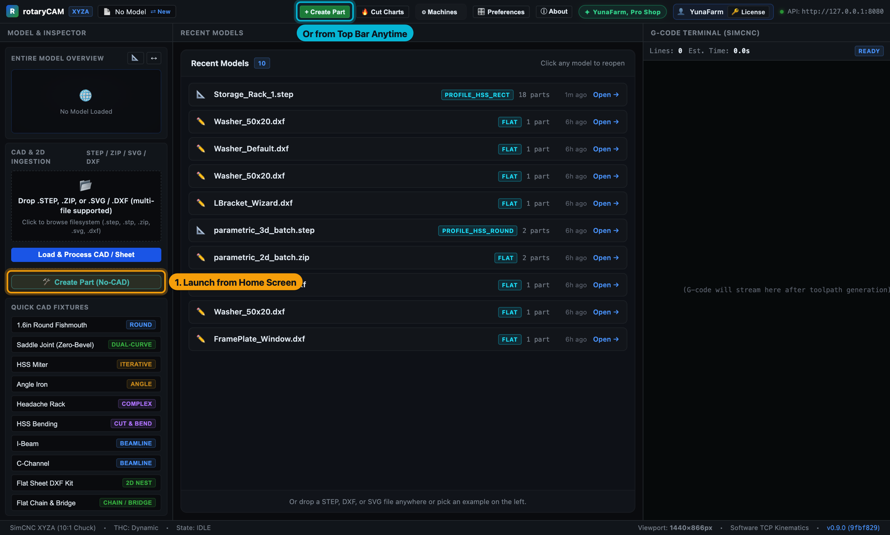

Step 01
Open
Open Create Part (No-CAD) & Pick Units
Launch the built-in part builder from anywhere in RotaryCAM:
- Click Create Part (No-CAD) on the Home screen, or click + Create Part in the top navigation bar.
- Use the mm / in toggle in the top-right wizard header to match your tape measure and machine units.
- Pick your workspace tab at the top: 2D Flat Plate for sheet parts, 3D Tube & Pipe for single coped/mitered sticks, or 3D Tube Frame for full welded assemblies.
